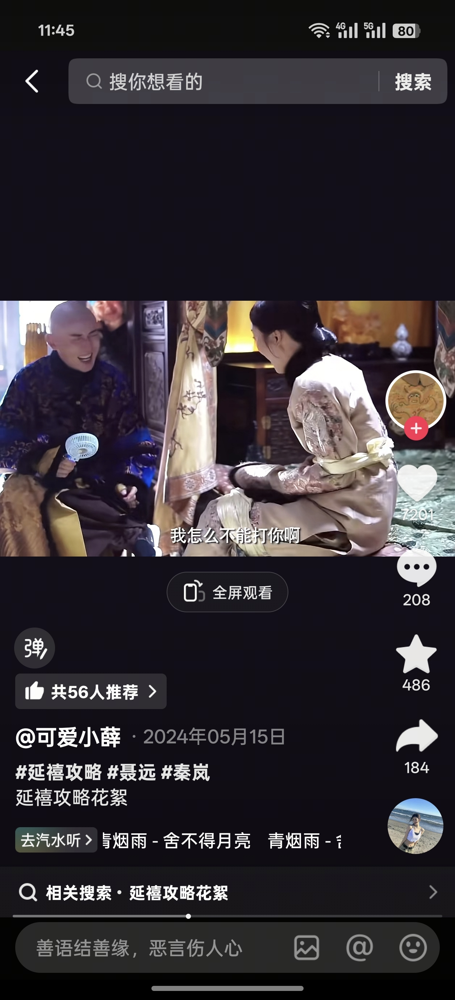
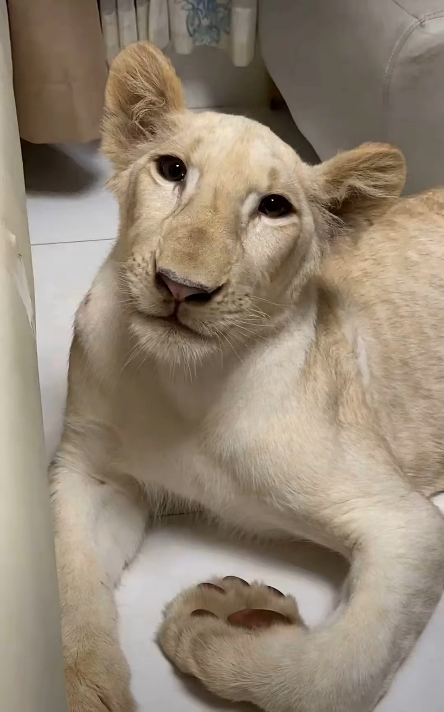

老大是虐猫区
成功感化后的菜鸟：
吃了个啥
接接接，天清地灵，日月分明，借我运者，数倍归还，好运归来，霉运散形，福生无量天尊[感谢][感谢][感谢]
乱拳打死老师傅[泪奔]
新手保护期。我儿子小时候买彩票，几乎次次中奖，可惜到高考运气用完了，211的水平只考上了普通一本
新手保护期[鼓掌]
我在台湾做生意的时候
怎么不挠它脚心[他急了][他急了][他急了][他急了][他急了]
我肯定忍不住会把它打水里去[笑哭]
“下辈子再养猫，我就是狗”
这一段！我属实没想到。[捂脸]
谁懂那只手的救赎感[九转大肠]
我不是莆田人啊！！我的口音是被我莆田朋友带歪的的[苦涩][苦涩] 在努力改回来了！！！！
开头be like
这说的是你吧[看]
谁懂主播摔下去以后的表情特别像那个命苦的特效[憨笑][憨笑][憨笑]
对不起这一嘴的小狗牙真的没忍住[尬笑][尬笑]
每只猫猫来的时候头都跟嗦过的芒果核一样哈哈哈哈
他是觉得你能喂吗
聋哑人吵架，手速堪比火影。但当另一方闭上眼将是绝杀。
张婧仪拍电影的时候比拍电视剧还要更好看诶为什么[思考]
这个宣传角度有感觉了！手语家庭没有悲哀，吵吵闹闹，快快乐乐的一天！这我就很好奇，想去看了。
爷爷，您能拯救一下我儿子的字吗[微笑]
[感谢][感谢][感谢]老爷子太棒了[鼓掌][鼓掌][鼓掌] 路过，画一幅！
这老爷子才刚开始吃青春饭[赞][赞][赞]
去年练了半年多 给朋友写的婚书[干饭人]
我的婚书是哥哥手写的，好喜欢[泣不成声][泣不成声][泣不成声][泣不成声]
当今社会有几对配的上这婚书
有男的敢和我用此婚书吗？
不然回家也让我爷爷开个号，干了一辈子中医了，跟这爷爷差不多的年纪，正是当立之年[发呆]
这么大年龄还耳聪目明本身就是一个很有福气的人，经他手写出来的婚书肯定也凝聚了满满的福气
看看我三年级闺女写的
我幺外公给我写的[微笑]
我也想请爷爷写一封休书，怎么联系[流泪]
对嘛！86这不妥妥的80后吗！！正是闯的时候！！！
上官婉儿开大
左边那个人都被ai成扇自己嘴巴子了[捂脸]
这喷不了，真功夫
传说中的老蹬[泪奔]
原来是中文，我原来以为是什么外国语言[憨笑]
我才发现这个歌词这么颠[捂脸]
这首是《死疙瘩》！我们绑个死疙瘩我们打个结~
老子一直以为是西班牙语[憨笑][憨笑][憨笑][憨笑][憨笑]
难如听
这歌词怎么像山歌一样[微笑]
这云贵川人写的歌嘛
当年凭着这滴泪躲过了网暴，扛了一半的屠龙刀
看多少遍都觉得纯妃真的太狠了[困]怎么有人能坏成这样，就算傅恒不喜欢她，她和容音闺中就是好友啊，入宫之后容音也一直照顾她，太恶心了
谁来赔这一生好光景
因为容音这个角色，我对秦岚永远有滤镜
娴妃一直被高贵妃欺压，黑化都说得过去，纯妃真的，又蠢又坏，被娴妃PUA一下就背刺闺蜜，还杀别人儿子[绝望的凝视]
乾小四不明白容音用了多大代价怀了这个孩子，她选择走上城墙去，应该是要望一望在宫外的璎珞[苦涩]
不知道怪明玉干嘛，明玉就是小孩子心性，她看到容音愿意吃东西，认为容音想开了，她又不知道尔晴刺激了容音
这里面最莫名其妙的角色就是袁春望，他有点变态加恶心的感觉
淑慎管理后宫，皇宫水缸底下的火没烧导致水缸结冰，导致救火不及孩子没了，淑慎绝对有问题，但是藏的太深了，魏璎珞都是很久之后才知道[暗中观察][暗中观察][暗中观察]
都别哭[流泪]，花絮这一段还在打闹嬉戏呢[流泪][流泪] 
容音太了解他们了[流泪]她知道璎珞会为了她冒犯圣颜，她知道她生性自由所以她留了遗嘱要璎珞离开皇宫，她还知道皇上会让她梳妆，她把遗嘱放在了妆奁。他们是容音此生最爱的两个人[流泪]
所以尔晴和纯妃死的太简单了[尬笑]
我记得当时如懿传跟延禧攻略是几乎同时上映，当如懿传看了第一集周迅那个妆造就看不下去了，延禧攻略是真喜欢，主要是从女主到皇后到皇上傅恒都很顺眼
懂了，大如转的遗书也是对标这个吧，对皇上一句不提，哈哈哈哈，小丑之剧啊大如转[捂脸][捂脸][捂脸]
打着爽剧的名头扎我最深的刀。延禧你好狠的心[流泪][流泪]
这里是魏姐第二次已有死志，第一次是雷劈太妃[眼含热泪][眼含热泪]她自戕都选最快的🗡
虽然看的是拉片但是又流泪了，太悲痛了那个时代的女性都是被吃掉的管你是平民百姓还是皇宫贵族…哎哭死了[流泪]
容音这件事上，乾小四是有信息差的。我认为真正让容音崩溃的是：知道小四和尔晴有“私情”。而乾小四认为，他也是父亲，七阿哥去了 他也很难过，难道他也能像容音一样从角楼越下吗？不，他不能，他是皇帝。所以他觉得容音懦弱。甚至以前能跟他对上电波的璎珞都指责他，不理解他。但后来令妃时期小四知道尔晴的事，万念俱灰，他自责万分，久久不能平息，那一刻他才明白，他自己是个魂淡[流泪]
难道我奶奶平时就是看这种？
你以为的潮剧:《将军令》 实际上的潮剧:《将军爱上离异带娃的我》
所以到底谁一直觉得老辈子们封闭[捂脸]
我奶还看那种皇帝娶自己女儿的戏剧[愉快][愉快][愉快]
我小时候看过一部潮剧，小姐看上穷书上，书生爱上小姐身边的丫鬟，丫鬟书生私奔，被小姐弄死了。小小的老子内心:哇哦！！
对的，而且里面的人说话可敢说了，台词可比现在的电视剧都炸裂[捂脸][捂脸][捂脸]
我奶奶最近听了一部戏，妹妹许配给一户人家病秧子少爷冲喜，妹妹不愿意嫁让哥哥冒充新娘去拜堂。拜堂当天少爷病倒了，少爷家人让少爷妹妹去陪陪嫂子，结果发现嫂子是男人然后对簿公堂的故事[捂脸][捂脸]
我看过一部潮剧，读书人先娶了表妹，可他的堂妹也想嫁给他，于是冤枉表妹不忠，表妹被赶出家门，生了一个儿子，堂妹如愿以偿的嫁给了堂哥，生了一个女儿，最后儿子当上了官，为母亲洗清冤屈，真相大白后，这两个孩子在一起了[尬笑]
看过一个两兄弟（年纪一样，一个比另一个一辈）一起当皇帝，两个人手牵手一起坐龙椅。给我看的。嗯？
差不多，喝奶必须有狗扛腿，不然不喝，现在一说喝奶狗子自动就躺那了[捂脸]

还有谁买了自取其辱三件套[捂脸]吸奶器 防溢乳垫 储奶袋
狗：未婚未孕 产后抑郁[捂脸]
我天天这样刷无声抖音[捂脸]此刻有这样的姐妹吗？
网上买的拉布拉多怎么不像啊[流泪][流泪] 
这我狗，真无话可说[微笑]
我还在想buzzy是什么词 怎么小学生会我都没听过[流泪]
不是我吹，看过这张照片的人，全家都无病无灾[感谢][感谢]
为了救女儿，变成这样，很多人不理解，但是你真的是个合格的爸爸[赞][赞][赞]
再笨的动物都能知道心疼幼崽[赞]
我记得这歌没这么膻啊[暗中观察]
曹贼，哪里跑[酷拽]
听过清唱，听过真唱，没听过清真唱[泣不成声][比心]
眼睛一闭感觉曹操光膀子给我烤羊肉串呢
三国：哈萨克斯坦、塔吉克斯坦、吉尔吉斯斯坦
是这样了！
林俊杰：＂我记得我写这首歌的时候没加这么多调料啊＂
有一次跟新疆朋友打架，我锁他脖子的时候他说：啊，朋友，打架归打架，呼吸给一下呢
真不怪子豪不爱发恬恬[捂脸]。每次一有恬恬视频就有说像谁。说人家眼睛。孩子一岁都不到呢。能看出来啥。女大十八变[比心]。嘴下积德。
都说了长时间不洗澡身上就会长狮子[捂脸]
躲进去[赞][赞]
二爷护我！[快哭了][快哭了][快哭了]
众邪祟，我在这里等你们。
原来是妈妈桑[赞]
以为是妈妈结果是老鸨[捂脸][OK]
组织卖淫罪，最高判处15年
见过买狗的，第一次见让狗出去卖的[微笑]
好食到扑街
摔下去这一下给老铁笑昏了
啊？你们不是这样吗
成都像一朵菊花[泪奔]
人都不直路怎么直[抠鼻]
重庆的导航[愉快]
我就说他们怎么可以东南西北的认方向[流泪][流泪][流泪]
对不起 这两个放在一起 真的很炸裂
这首歌跟这张图很配
这种感觉就像: 那就这样吧，你赶紧走啊，别耽误我找下家[不失礼貌的微笑]
骑兵连，进攻！[咒骂]
Read more: